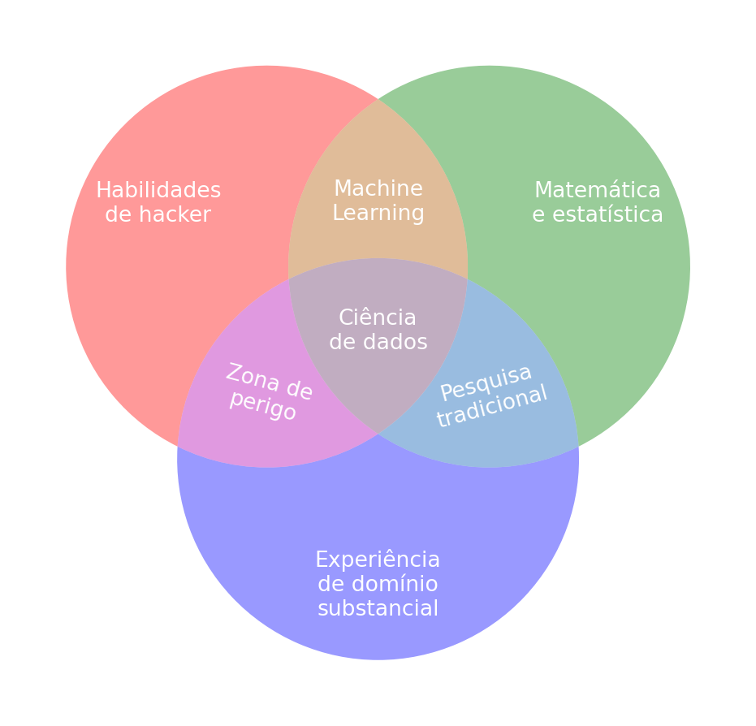
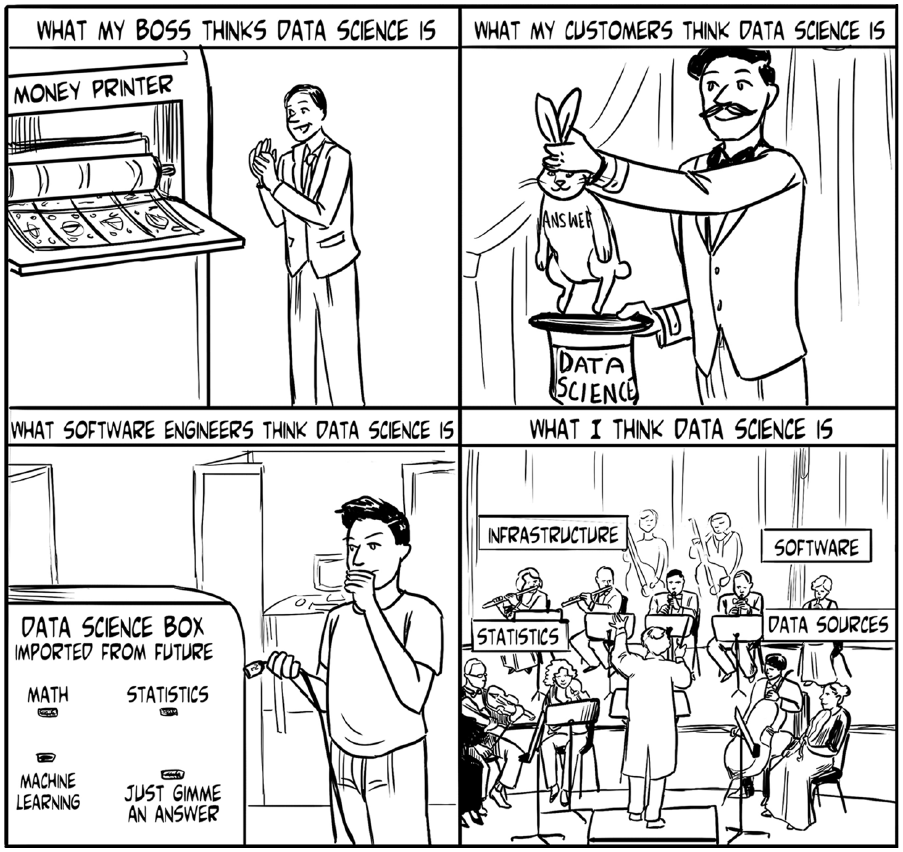

Definição
Palavras-chave
Ciência de Dados, Introdução, Definição, História
Antes de começar a estudar qualquer coisa, faz sentido começar pelo que é, ou seja, pela definição daquilo que se pretende estudar. No entanto, nem sempre é possível encontrar uma única definição objetiva e clara pra tudo, o que aparenta ser o caso para a Ciência de Dados.
O que é Ciência de Dados
“Ciência de Dados” é frequentemente usado como um termo guarda-chuva para múltiplas áreas que estudam dados por meio da computação. No entanto, as definições para o termo podem ser tão diversas quanto as partes interessadas1 nele. A tirinha na Figura 1 ilustra diferentes percepções sobre o termo.

Parte dessa diversidade de percepções se dá pela popularização do termo “Ciência de Dados”, por vezes visto como mais uma buzzword,2 uma palavra da moda sem um sentido bem definido. Para esclarecer melhor o termo, a próxima subseção apresenta algumas definições e um pouco da história.
História e definições
A história da Ciência de Dados é frequentemente associada com a da Ciência da Computação. Segundo Verri (2024), a história do termo inicia nos anos 60 com Peter Naur3 ao sugerir que o termo ciência de dados ou “dadologia” (datalogy) fosse mais adequado do que ciência da computação. Naur acreditava que a área deveria enfatizar, como conceitos fundamentais, a importância dos dados e aspectos relacionados de seu processamento, em oposição ao foco nas linguagens de programação e algoritmos predominantes na época (Blum, Hopcroft, e Kannan 2020).
Os primeiros usos do termo também são atribuídos a diversos cientistas do campo da estatística. Por exemplo, Chien-Fu Jeff Wu e William Cleveland, respectivamente, argumentavam pela renomeação da estatística em ciência de dados e pela expansão da estatística em direção campos mais técnicos (Carvalho, Menezes, e Bonidia 2024; Morettin e Singer 2025; Verri 2024).
Há diversos sabores de definição para a Ciência de Dados na literatura. Para Verri (2024), Ciência de Dados é o estudo da extração de conhecimento de fenômenos mensuráveis usando métodos computacionais. Uma definição simples, mas que destaca elementos importantes para a área de estudo que pode ser vista como uma nova disciplina.
Segundo Carvalho, Menezes, e Bonidia (2024), a Ciência de Dados pode ser vista como uma evolução da área de Análise de Dados ao se unir com a Computação e se beneficiar de seus avanços. Os autores também chegam a considerar a Ciência de Dados como uma nova área de conhecimento aplicada e voltada à extração de conhecimento a partir de dados. Essa visão não é incomum na literatura e remete ao fato de que, na prática, a Ciência de Dados aborda a aplicação de conhecimentos, técnicas e tecnologias já conhecidas e estudadas por outras áreas (Morettin e Singer 2025).
Alguns autores veem a Ciência de Dados mais como um subconjunto de ferramentas da matemática estatística e da computação e menos como uma nova área de conhecimento. Por exemplo, VanderPlas (2016) sugere que o leitor pense sobre Ciência de Dados não como uma nova área de conhecimento, mas sim um conjunto de habilidades interdisciplinares que podem ser aplicadas a qualquer domínio na busca de perguntas e respostas baseadas em dados. Sob esse ponto de vista, o diagrama de Venn de Drew Conway,4 apresentado na Figura 2, costuma ser invocado para ilustrar os ingredientes da Ciência de Dados.
Em resumo, Conway enfatiza que é a combinação dos três conjuntos de habilidades principais que cria um cientista de dados: as habilidades para lidar com tecnologia em que os dados são codificados; os conhecimentos dos métodos para extração de valor desses dados; e uma experiência de domínio substancial voltada à produção de conhecimento. É a este último conjunto de habilidades que Conway atribui o aspecto científico do termo.
Complementarmente, Godsey (2017) considera que a Ciência de Dados também engloba o conjunto de processos e conceitos que servem de guia para se fazer progresso e tomar decisões em projetos centrados em dados. A diferença entre essa visão e as outras apresentadas anteriormente é sutil e, basicamente, se resume a qual aspecto da Ciência de Dados é julgado mais relevante na visão dos autores, isto é, o conhecimento técnico e teórico versus a mentalidade e a experiência aplicada do cientista de dados, o que vai de encontro à definição de Conway.
A figura do cientista de dados também é alvo de grandes expectativas de conhecimentos multidisciplinares. Por exemplo, Das (2016) descreve um cientista de dados como “alguém que levanta questões interessantes sobre dados para gerar conhecimento útil” e que é provavelmente “um indivíduo com treinamento em ciência da computação, negócios, economia, estatística, e munido com a quantidade necessária de conhecimento do domínio relevante para o problema em questão.” Em contrapartida, outros autores consideram que essa visão não é realista, configurando o chamado cientista de dados “unicórnio” (Fayyad e Hamutcu 2022).
Independentemente da definição, a interdisciplinaridade é sempre um fator atribuído à Ciência de Dados. Visto que não há um consenso na literatura sobre o que a Ciência de Dados engloba, é natural que a definição de um cientista de dados também seja incerta. Parafraseando a frase frequentemente parafraseada de Josh Wills5, “um cientista de dados é uma pessoa que é melhor em estatística do que qualquer engenheiro de software e melhor em engenharia de software do que qualquer estatístico”.
Referências
Blum, Avrim, John Hopcroft, e Ravi Kannan. 2020. Foundations of Data Science. Cambridge: Cambridge University Press. https://www.cambridge.org/core/books/foundations-of-data-science/6A43CE830DE83BED6CC5171E62B0AA9E.
Carvalho, André C. P. L. F. de, Angelo G. Menezes, e Robson P. Bonidia. 2024. Ciência de Dados: Fundamentos e Aplicações. LTC. https://books.google.com.br/books?id=HNSn0AEACAAJ.
Das, Sanjiv R. 2016. “Data Science: Theories, Models, Algorithms, and Analytics”. 2016. http://srdas.github.io/Papers/DSA_Book.pdf.
Fayyad, Usama, e Hamit Hamutcu. 2022. “From Unicorn Data Scientist to Key Roles in Data Science: Standardizing Roles”. Harvard Data Science Review 4 (3). https://hdsr.mitpress.mit.edu/pub/60qq269p.
Godsey, Brian. 2017. Think Like a Data Scientist: Tackle the Data Science Process Step-by-Step. Manning. https://www.manning.com/books/think-like-a-data-scientist.
Morettin, Pedro Alberto, e Júlio da Motta Singer. 2025. Estatística e Ciência de Dados. LTC. https://books.google.com.br/books?id=KRD6zwEACAAJ.
VanderPlas, Jake. 2016. Python Data Science Handbook: Essential Tools for Working with Data. O’Reilly Media. https://books.google.com.br/books?id=dQgGzQEACAAJ.
Verri, Filipe Alves Neto. 2024. Data Science Project: An Inductive Learning Approach (versão 0.1.0). Leanpub. https://doi.org/10.5281/zenodo.14498011.